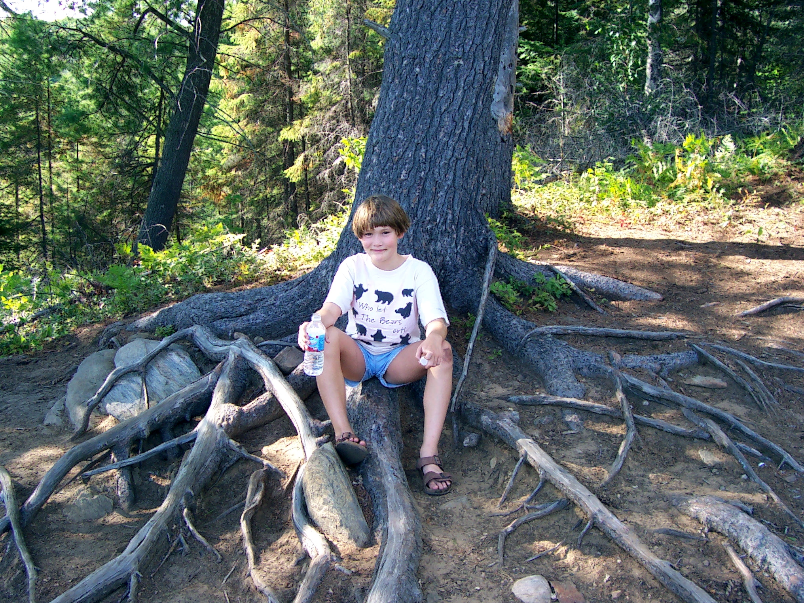

Trails in and around Algonquin Provincial Park

Mizzy Lake Trail
This is the trail where you can see the most wildlife in Algonquin park. You’ll wind through 11km of lakes, marshes and forests. My daughter and I saw massive turtles, were followed by otters who mocked us, and even stood 2 feet away from a moose who crossed our path when she realized her foal was on the other side. The pic at the top of this page is of my daughter resting shortly after we found the remains of a grey jay (now officially called a Canada jay) that was likely eaten by a pine marten.
Track and Tower Trail
This 7.5km trail is very close to where we liked to camp in Cannisbay Lake. It’s stunningly beautiful and rugged trail that climbs to a spectacular lookout over Cache Lake (the location of the historical Highland Inn).
Spruce Bog Boardwalk
While this is a short trail (1.5km), it has a beautiful boardwalk that takes you across a spruce bog that looks both beautiful and eerie (very dark water). Expect to see plenty of birds and smaller animals very close by.
Hemlock Bluff Trail
This 3.5km trail winds around Jack Lake and has plenty of elevation changes (including stairs in certain sections). The pines and hemlock trees along most of this trail are incredibly gorgeous, as is Jack Lake.
Bat Lake Trail
This trail stays pretty close to Bat Lake and the surrounding marshes, so you’ll get great exposure to some interesting wildlife as you walk around the area and on the boardwalks. At 5.8km, it’s a decent hike too. Just don’t do it too late in the day because it’s quite creepy at dusk.
Hardwood Lookout Trail
While this trail is only a few kilometers long, you’re climbing difficult rocky terrain through a hardwood forest. But it’s quite rewarding with its view of Smoke Lake and there’s a tall stone monument to Douglas McDonald Hains (a famous conservationist).
Centennial Ridges Trail
This 10.4km trail is tough and traverses two high ridges, but the views are spectacular. There are some extreme elevation changes and difficult sections, but it’s well worth it. You can see large swathes of the surrounding park and appreciate how large Algonquin really is.
Lookout Trail
This trail is fairly short (2.1km) but challenging as you hike up to the top of a lookout. I actually have a picture of my daughter seated at the plateau at the top of the lookout, balancing her hiking stick on her head with Algonquin stretching away in the background.

Marsh’s Falls Nature Reserve
This reserve is located just outside Algonquin Provincial Park in Dwight. It features several beautiful trails, with sections that wind along the picturesque Oxtongue River. The falls are breathtaking and can be found near the beginning of the trailhead, next to the visitor centre. My grandfather and I used to fish from the rocks at the base of the falls, and over the years we cottaged in Dwight, my daughter and I canoed up the Oxtongue River from Dwight Bay to the falls several times. Nowadays, you’ll see many people boating up to the falls or accessing it via the nature reserve and swimming at the base.
The beautiful knotty pine visitor centre at the base of the falls is actually the former home of Phil Copps, who ran the coolest trading post of all time on Hwy 60 in Dwight. The Phil Copps Trading Post featured a massive cabin that housed an outfitter/gift store with an indoor wildlife museum, as well as an impressive outdoor Indian and Old West Village, petting zoo, and a trail leading to a rustic cabin on a cliff. Adjacent cabins housed an ice cream and candy shoppe, furniture store, and a restaurant (Grizzly Burgers). Only a small portion remains today and has been rebranded as the Dwight Trading Post.
At one time, Copps planned to open a camping and cottaging resort called Marshs Falls Park – Copps Gardens on his expansive property at the base of Marsh’s Falls, but the project ultimately fell through. However, you can still see what the sign would have looked like – he repurposed it as a door in the basement of his home (shown right).